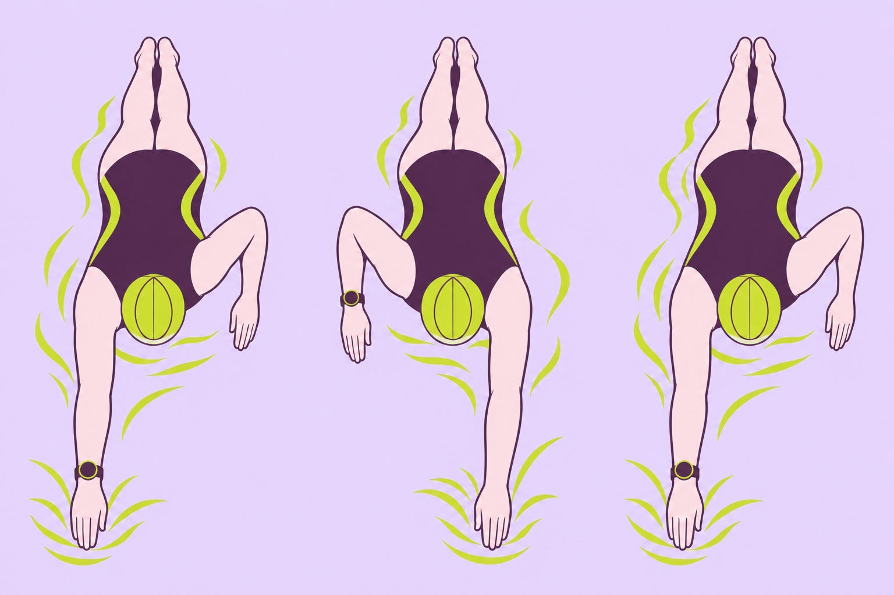
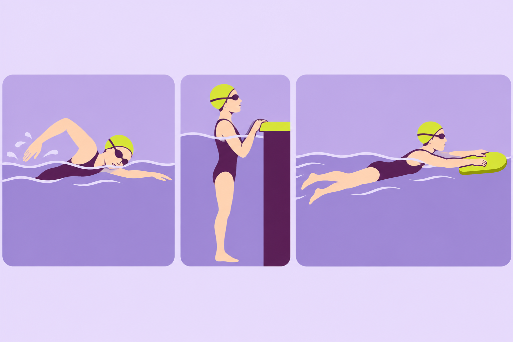

SWIMMING RESEARCH / 22
水泳の腕時計、記録を次の練習にどう生かす？
設定を合わせて、片道ごとの記録を読む
2026年11月12日 公開

練習が終わり、時計の画面を開く。時間、距離、消費カロリー。いつも見るのは、だいたいその三つ。対応する時計やアプリでは、もう一つ画面を開くと、一本ずつのタイムとかき数が出てきます。ここから何を見れば、次の泳ぎに使えるのでしょう。
最初に決めたいのは、今日の疑問です。「終盤も同じ速さで泳げた？」「速さが落ちたとき、腕の回数は変わった？」。問いを一つ置くと、同じ記録でも見たい数字が決まります。まずは時計が距離やかき数をどう作るかから見てみましょう。
1｜泳ぐ前に、プールの長さを合わせる
プールで使う日は、時計の「プールスイミング」を選び、端から端までの長さと単位を確認します。25mと50mは違いますし、25ヤードと25mも同じ距離ではありません。Apple Watchのガイドも、プールでの開始前に長さを設定する手順を案内しています。設定画面と機能は製品ごとに違うので、操作は自分の機種の説明を見ます。Apple Watchユーザガイド
たとえば対応するGarminの時計は、腕の動きや速さの変化をとらえる部品「加速度センサー」を使い、泳ぎの片道が終わったことを判断します。壁から反対の壁までを「片道1本」と呼びます。行って帰ると2本です。時計が検出した本数に、設定したプールの長さを掛けたものが、距離の表示になります。25mプールで行き、帰り、行き、帰りと泳ぎ、四本とも正しく検出されたとします。設定が25mなら100m。50mを設定したままなら200mと出ます。これは仕組みを説明する仮例です。Garmin Swim 2の距離記録
泳いだ距離は同じ。設定で表示が変わる
同じ場所を行き帰りして4本。
実際の距離は 25m × 4本 ＝ 100m
4本 × 25m ＝ 100m。実際に泳いだ100mと一致。
4本 × 50m ＝ 200m。泳いだのは100mのまま。
時計の表示が200mになっても、プールが長くなったわけではありません。泳ぐ前に設定と施設のプール長を合わせます。
図で見る点 同じ四本でも、掛ける数字を変えると合計距離が変わります。練習で使うときは、初めて行くプールで最初に長さと単位を確認してください。
一日の距離がいつもと違うときは、速さや体力の変化を考える前に、設定した長さと実際に泳いだ本数を振り返ります。長さが合っていても、動きの検出がずれることがあります。そこで次に、時計が数える「かき」を見ます。
2｜「かき数」は、どの動きを一回にしている？
クロールで右手、左手と水に入ったとき、それぞれを一回と呼ぶ人もいます。右手が水に入り、次に右手が入るまでを一周期と数えることもできます。同じ動きでも、数える単位が違えば数字は変わります。
この先の図では、Garminの数え方を例にします。時計を着けた腕がひと巡りして1回。ここでは、この回数を「時計のかき数」と呼びます。 右腕に時計を着けた例なら、右手が水に入ってから、次に右手が入るまでで1回です。間に左手も入りますが、左手をもう1回とは足しません。左腕に着けているときは左腕で考えます。数字を手数えや映像と照らすときは、時計の定義を確認し、片腕の周期か左右の入水を数えたものかをそろえます。Garminの水泳用語
右手から次の右手までで「1回」
右 → 左 → 次の右
三つの場面ですが、時計側の腕は1周期。
- 1右手が入る：ここから

時計を着けた右腕に注目します。
- 2左手が入る：まだ途中
右腕の一周期は続いています。ここで別の1回を足しません。
- 3次の右手が入る：ここまで
右手から次の右手までで一周期。この例では1回です。
縦線の始めから終わりまでを、ひとまとまりで見ます。1・2・3は場面の順番で、時計の回数ではありません。
図で見る点 「右手が入る → 左手が入る → 次の右手が入る」を追ってください。三つの場面が並んでいますが、3回という意味ではありません。図の括りの始まりから終わりまでで1回です。自分の時計の表示を見返すときも、まず何を一回とするかを確かめます。
Mooneyらは、競泳選手10人が四泳法（クロール・背泳ぎ・平泳ぎ・バタフライ）で泳ぐ間、当時のFinis SwimsenseとGarmin Swimを着け、映像を基準に時計の表示を調べました。この実験では、映像で確認した距離と時計の距離に、はっきりした違いは見つかりませんでした。ただし、毎回の記録がぴったり一致したと証明したわけではありません。
一方で、ひと続きに泳いだ区間の最初と最後の片道タイムは、途中の片道よりずれが大きく、かき数にも差が出ました。例えば休まず100mを泳いだ場合、最初の25mと最後の25mがその両端です。これは2017年の二機種と、その研究で使われた泳ぎ方での結果です。今の全機種や、すべての泳ぎ方に同じずれが出るとは限りません。Mooneyらの原著
この結果が役立つのは、距離が合っていた日の記録でも、別の項目は別々に確かめられることです。かき数の小さな差で練習内容を変えたいときは、同じ数え方で見た指導者の観察や、条件をそろえた別の日の記録も使えます。
3｜休みと板キックを分けると、記録が読みやすい
泳ぐ時間と休む時間が一緒になっていると、練習全体の長さは分かっても、一本ずつのペースは読み取りにくくなります。対応機種では、休憩を自動で分ける機能や、ボタンで休憩の始まりと終わりを記録する機能があります。板キックなど腕の動きが少ない練習は、対応するGarminのドリル記録で距離を入力できる場合があります。時計が通常の泳ぎと同じように数えられるかは、機種やモードによります。Garmin Swim 2の休憩・ドリル記録
Apple Watchでも水泳ワークアウトのセットごとのペースを、iPhoneの記録で見返せます。ここでのセットは、休みを挟むまでのひとまとまりです。表示が片道一本なのか、何本か続けた区間なのかを確認してから比べます。Apple Watchの水泳ガイド
三つの状態を、分けて記録する

壁から反対の壁へ。対応機種は動きから片道を検出します。
泳ぐ時間と休む時間を分けます。対応機種では自動検出やボタンを使います。
腕が動かない練習。対応機種ではドリル用の記録や距離入力を使います。
同じプールでも、泳ぐ・休む・板を持つと、腕の動きが違います。自分の時計の説明書で、それぞれの記録方法を確かめます。
図で見る点 図の三つは練習する順番ではなく、記録を分けて見るための種類です。同じ練習の中でも、「泳いだ一本」「壁で休んだ時間」「板キック」を分けて見ます。全部の設定を一度に使いこなす必要はありません。今日は休みを区切る、という一つから始めると振り返りやすくなります。
4｜最初と最後の一本を、同じものさしで比べる
たとえば25mのクロールを四本。いつもの余裕のある速さで、毎回壁から始め、1〜3本目のあとに同じ長さだけ休みます。終わったら、1本目と4本目の片道タイムとかき数を並べます。図の数値は記録の読み方を説明する仮例です。一本ごとに休むと、毎回が区間の始まりと終わりになります。この例でタイムを比べるときは、壁時計や指導者の計測を基準にします。腕時計の表示は、次に観察する動きを選ぶ手がかりにします。
図では4本目が3秒遅く、時計のかき数が2回増えています。このように、かき数が増えていても、腕の回数だけで良し悪しを決めず、「最後の一本で何が変わった？」と振り返ります。呼吸が急いでいたのか。途中で人をよけたのか。どれか一つ覚えていることを横に添えます。4本目が遅くてもかき数が同じなら、今度は同じ回数で時間が長くなったことに目を向けます。どちらの例でも、この二つの記録だけから、動きが変わった原因までは決まりません。
時間と回数を、同じ位置で見比べる
時計が区切った最初・最後の片道にはずれが出る場合があるため、この例の時間は壁時計で確認しています。
25m・30秒・12回。
1本目より3秒長く、2回多い。原因はこの数字だけでは分かりません。
時間の欄どうし、回数の欄どうしを比べます。疲れやフォームの変化と決めつけず、次に見る動きを指導者と一つ選びます。
図の使い方 図の30秒・33秒は壁時計で確かめたタイム、12回・14回は、時計を着けた腕のかき数の表示です。測った道具を分けて見ます。見る順番は、タイム、かき数、自分が感じたこと。次の練習では、この順番で一組だけ比べてみてください。同じプール長と泳法で比べ、普段と条件が違った日は、その違いを添えます。
記録を全部分析しなくても大丈夫です。「最後は少し慌ただしかった」という感覚の横に、その一本の数字を置く。次に泳ぐときの問いが一つ見つかれば、時計を見る時間が練習につながります。
数字を採点表にするより、次の一本への質問にする。
補足｜同じSWOLF「42」、泳ぎの中身は違う
SWOLF（スウォルフ）は、片道の「秒数の数字」と「時計のかき数」を足した値です。 この図では、同じ時計で記録した25mクロールを比べます。時計を着けた腕がひと巡りして1回、という第2章の数え方を使います。Garmin Swim 2の定義
Aは30秒で12回。30＋12＝42です。Bは28秒で14回。28＋14＝42になります。42秒泳いだ、という意味ではありません。 秒数の数字と回数を足して作った値です。図の数字はすべて説明用の仮例です。
SWOLFが同じでも、泳ぎの内訳は違う
片道の秒数の数字 ＋ その片道の回数
＝ SWOLFの値
30秒で、時計側の腕は12回。
Aより2秒速く、2回多い。同点でも内訳は違います。
Aより1秒遅く、2回少ない。値の小ささだけで上達とは決められません。
| 一本 | 時間 | 回数 | SWOLF |
|---|---|---|---|
| A | 30秒 | 12回 | 42 |
| B | 28秒 | 14回 | 42 |
| C | 31秒 | 10回 | 41 |
BはAより速い。CはAより遅い。
合計の大小だけでは分かりません。
同じ値なら、何が同じで何が違うかを内訳へ戻って見ます。速さ、楽さ、技術の良さを、この合計だけでは判断できません。
AからBへ、タイムは2秒速くなり、腕の回数は2回増えました。合計は同じ42でも、中身は違います。どちらが楽だったか、どちらの動きが良かったかは、この数字だけでは分かりません。
もう一つ見てみましょう。Cは31秒で10回。31＋10＝41です。Aの42より値は小さくなりましたが、泳いだ時間は1秒長くなっています。値が下がったことと、速くなったことは、同じではありません。 かき数を減らすことだけを目標にせず、秒数と回数をそれぞれ見返します。
比べる前に、同じ時計・同じプール長・同じ泳法かを確かめます。 25mと50mでは、足し算する時間と回数の対象になる片道が違います。時計を替えた場合は、何を1回と数えるかも確認します。似た強さで泳いだときの記録なら、自分の感覚も添えて比べられます。
メーカーはSWOLFを泳ぎの効率を見る指標として案内しています。ただし、この記事で読んだ2017年の研究は時計の記録の正確さを確かめたものです。SWOLFを下げれば上達する、と試した研究ではありません。 ここでの図は、合計を内訳に戻して読むための編集上の説明です。
次の練習では、SWOLFを見たら、横にある片道タイムと時計のかき数も一度開いてみてください。片道の区切りやタイムが怪しいときは、壁時計や指導者の計測、練習メモと照らし合わせます。「同じ42だけれど、今日は2秒速かった」。そこから「その一本は、どんな感じだった？」と問いを一つ作れれば、記録が次の練習につながります。
まとめ｜時計の数字を、次に見る一本へつなげる
研究の目的 水泳用の時計が、泳いだ距離や片道のタイム、かき数などをどれくらい正確に記録するかを確かめました。
何を比べたか 競泳選手10人が四泳法で泳いだときの二機種の記録を、撮影した映像と照合しました。
何が分かったか この実験では映像で確認した距離と時計の距離に、はっきりした違いは見つかりませんでした。区間の最初と最後の片道タイムではずれが出ました。かき数にも、映像での数え方と照合した結果、差が見つかった条件がありました。
記事の結論 この記事では、時計の区間ごとの記録を次の観察に使う方法を提案します。比べる前に、設定したプールの長さ、区間の始まりと終わり、かき数の定義をそろえます。
次の練習でできること プール長を合わせ、練習後に同じ条件で泳いだ最初と最後の一本を開いてみましょう。タイムとかき数を並べ、次に見たい動きを一つ選びます。休みで区切った一本のタイムは、壁時計や指導者の計測で確かめます。
参考文献と確認範囲
- Mooney Rほか（2017）Evaluation of the Finis Swimsense and the Garmin Swim activity monitors for swimming performance and stroke kinematics analysis. PLOS ONE 12(2), e0170902. 原著
- Garmin Swim 2公式説明書・休憩、距離記録、ドリル、Garmin 水泳用語、Apple Watch 水泳ガイド
研究は原著の方法と結果の関連箇所を使用しました。使い方はメーカーの公開ガイドを参照しています。図の設定例、練習のタイムとかき数は説明用の仮例です。